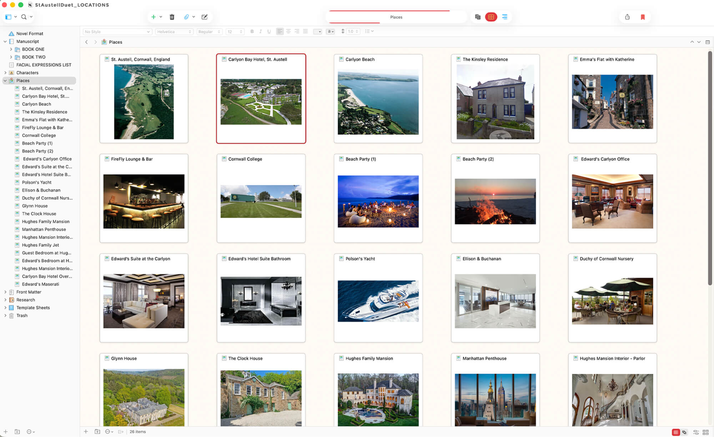
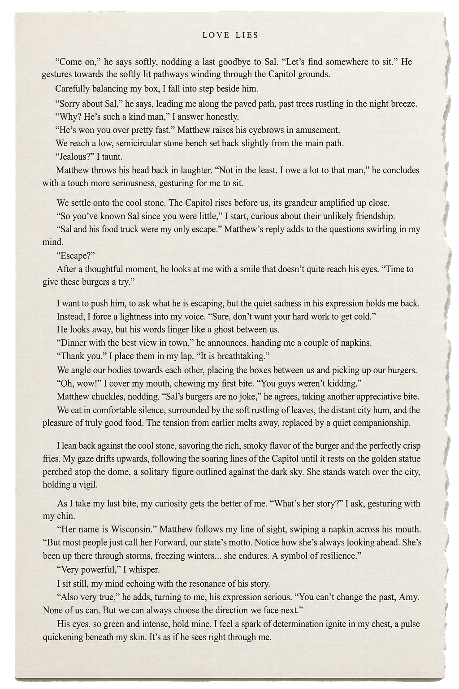
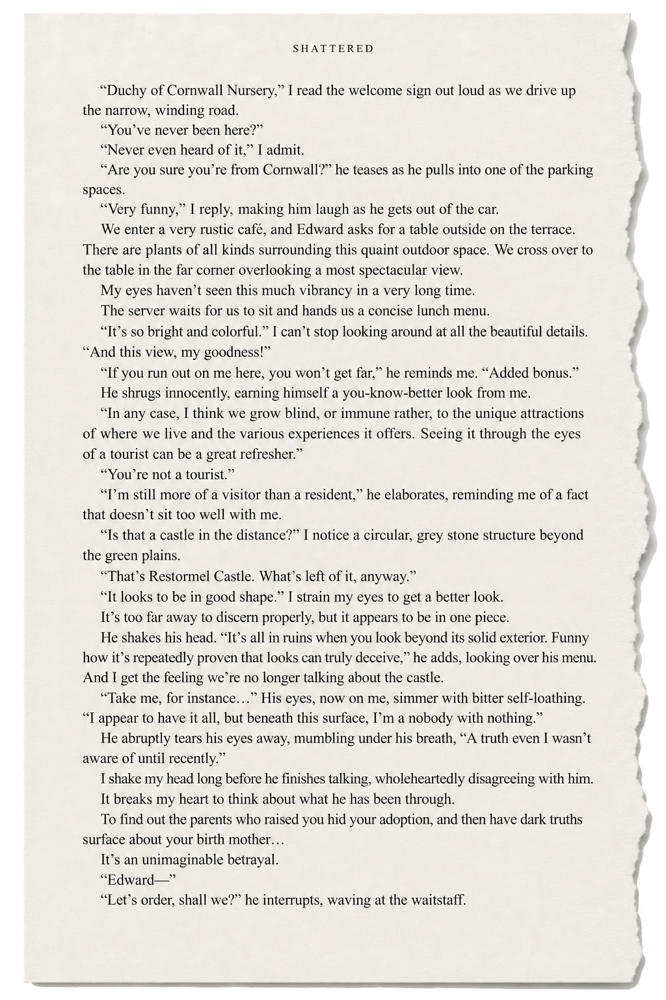
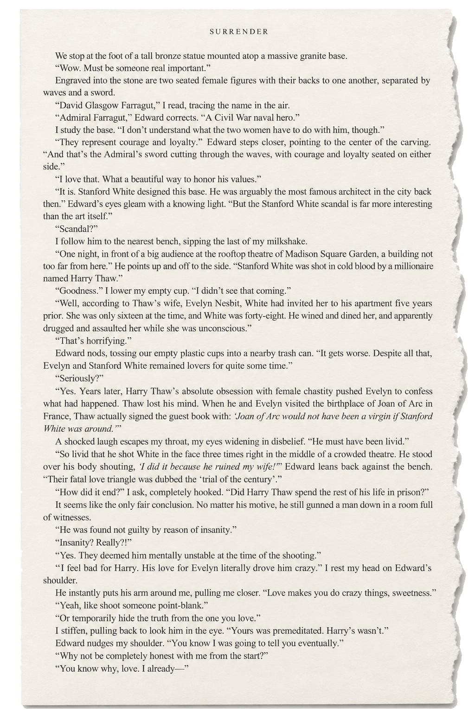

HTML Website CreatorIn contemporary romance, a place may already exist on a map. Making readers believe in it on the page depends on the research, observation, and creative decisions that transform location into story.

A believable romance requires more than believable characters. It requires a world that feels equally alive.
For author Joelle Habbaki, setting has always been part of the experience she wants each novel to offer. Her stories are intentionally placed in different parts of the world so that entering a new romance also means entering somewhere new. Cornwall. New York. Madison. Different landscapes, different histories, different rhythms.
But choosing a place is only the beginning. A believable storyworld is not created by naming enough streets or describing enough buildings. The real work begins when the setting starts affecting the people inside it.
There is a particular pleasure in opening a novel and finding that the story has carried the reader somewhere else. That sense of movement is intentional in Habbaki's fiction. Rather than returning to the same geographic world from book to book, she approaches setting as another way of giving each story an identity of its own.
The St. Austell Duet begins against the Cornish coast before its world expands to New York. Love Lies unfolds in Madison, Wisconsin, where Amy Beckett's personal crisis exists inside a city with its own architecture, history and character.
The romance remains central, but place changes its texture. Privacy changes. Noise changes. Distance changes. What the characters can see, hear and do changes with it.
Writing about a real place carries an unusual responsibility. The geography already exists. So do the buildings, roads, landmarks and histories that belong to the people who actually live there.
Habbaki researches those environments extensively before allowing them onto the page. But research alone does not create atmosphere. Most of what is learned never needs to appear in the novel. The challenge is selection.
A fact earns its place when it begins doing something inside the story. Sometimes it establishes credibility. Sometimes it reveals character. And occasionally, a real detail becomes so perfectly aligned with the emotional life of a scene that the boundary between research and storytelling almost disappears.
In Love Lies, one such moment unfolds beneath the Wisconsin State Capitol. Amy and Matthew are sharing food from Sal’s truck when Amy looks up at the golden figure crowning the Capitol dome.
What begins as curiosity about the city becomes part of the emotional conversation between them. Matthew tells her about the figure commonly known as Forward and what she represents to him: endurance, resilience and the choice to keep looking ahead.

Amy cannot undo what has happened to her. But she can decide where she goes from here. The Capitol is not present simply to establish Madison as the setting. It gives Matthew a way to express something Amy needs to hear at precisely that moment.
During a visit to the Duchy of Cornwall Nursery in Shattered, Emma notices a grey stone structure in the distance. Restormel Castle appears remarkably intact from where she sits.
Edward tells her otherwise. Beyond the solid exterior, he explains, the castle is ruined. The observation might have remained a detail about Cornwall. Instead, Edward turns it inward.
He begins describing himself in almost the same terms. From the outside, his life appears to contain everything. Beneath that surface, his understanding of who he is has been fractured by what he has learned about his own past.
The castle is no longer scenery. It has given Edward a metaphor.

Setting becomes part of character when a place gives someone the language for what they could not otherwise say.
Historical research can uncover extraordinary stories, particularly in cities layered with architecture, scandal and memory. But a novel is not a guided tour. A fact does not belong on the page simply because it is fascinating. It has to contribute something to the story already unfolding.
In Surrender, Edward and Emma encounter the Farragut monument in New York. Emma notices the figures carved into its base and begins asking questions. Edward’s explanation leads into the history surrounding Stanford White, Evelyn Nesbit and Harry Thaw.
For a moment, the scene appears to be about New York history. Then the conversation turns back toward Edward and Emma. A story involving love, obsession, secrecy and violence begins to echo against their own unresolved history, giving them another way into a conversation that was already waiting beneath the surface.

Grand settings and recognizable landmarks are easy to associate with worldbuilding. The smaller spaces matter just as much.
In Love Lies, Amy's café carries weight because it is not merely a location in which scenes happen. It represents what she has built for herself: routine, independence, work, familiarity and a future she believed belonged to her.
As the café comes under threat, the physical space acquires emotional stakes. Losing it would mean more than losing premises or income. It would mean losing one of the last parts of Amy's life that still feels entirely her own.
A setting becomes believable when readers understand not only what it looks like, but what it would cost a character to lose it.
Real cities do not wait for a romance to arrive. People are working. Buildings have histories. Cafés have regulars. Traffic continues. Weather changes. Landmarks existed long before the characters noticed them and will remain after the chapter ends.
That larger life matters. Readers may never consciously catalogue those details, but they feel the difference between an environment that exists only to service the plot and one that appears to have a life beyond it.
The same is true of continuity. Geography, routines, interiors and the emotional associations attached to particular places have to remain consistent. The characters remember where things happened. So should the world.
Worldbuilding is often associated with invented worlds. Contemporary fiction builds worlds too. Its materials simply happen to be real: a coastline, a café, a city block, a state capitol, a ruined castle seen across green countryside, a monument carrying a history the characters did not expect to discuss.
The writer's work is not to reproduce those places in exhaustive detail. It is to understand them well enough to know which details can enter the emotional life of the story.
For Habbaki, choosing different parts of the world for different romances is partly an invitation to travel. A reader can enter a love story and encounter another place alongside it. But the destination alone is never enough. The setting has to live. It has to affect behaviour, hold memory, provoke conversation and occasionally offer the story something the writer could not have invented quite as perfectly.
HTML Website Creator